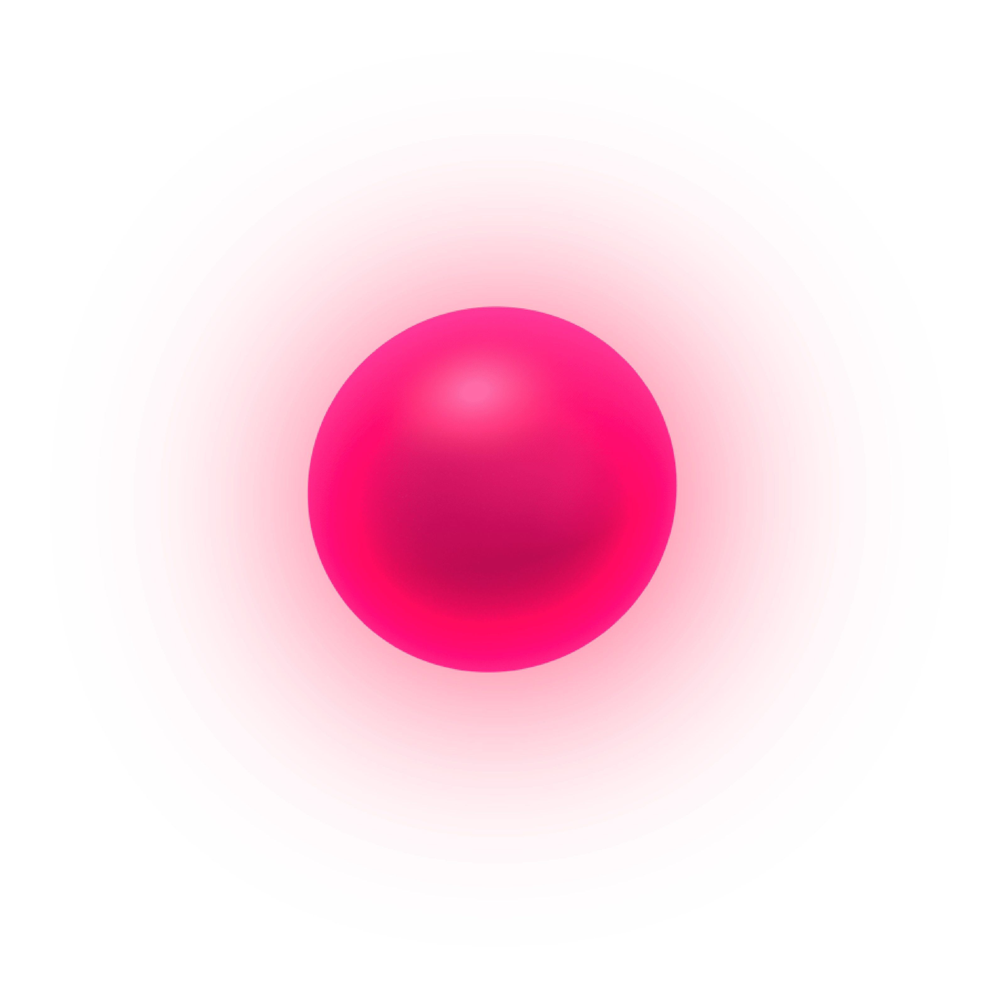
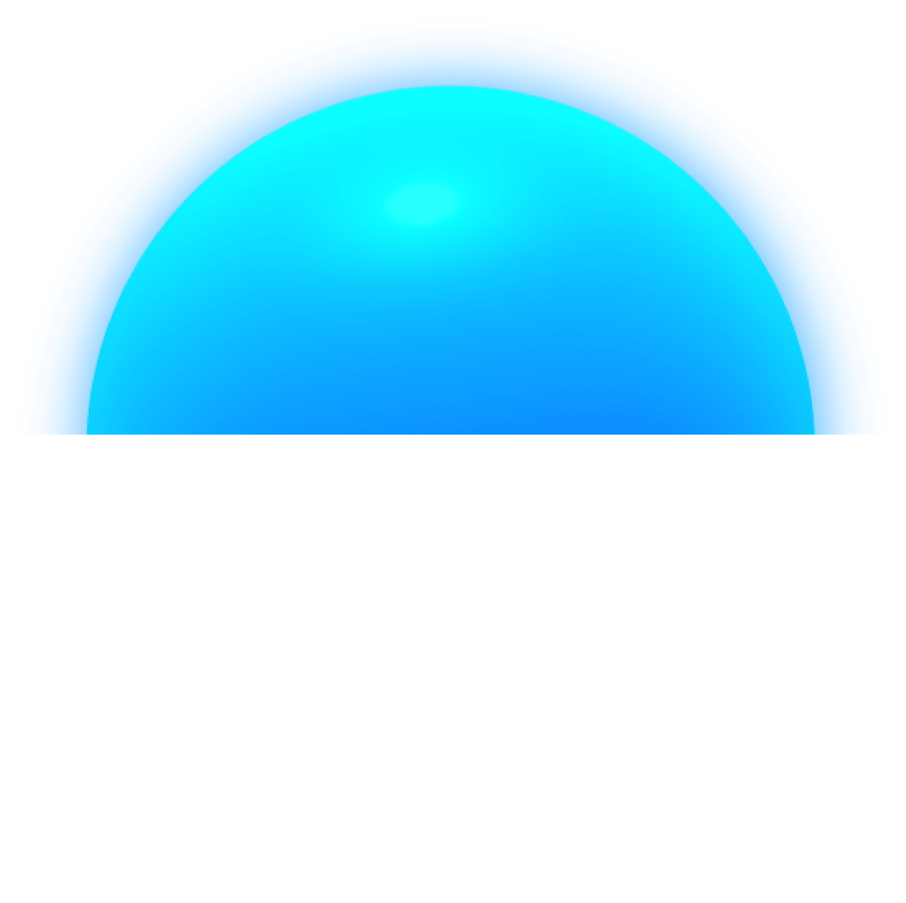

<!-- First fold starting-->
<style>
    .app-footer {
        display: none;
    }
</style>
<section>
    <div class="bg-cataract-wall" style="height: calc(100vh - 100px);overflow: hidden;background: none;z-index: 13;position: relative;">
        <div class="col-md-6 col-sm-12" style="height: 100%;z-index: 3;box-shadow: #313131 1px 1px 20px 3px;background-color: #2d0d72;float: left;position: absolute;"></div>
        <div class="col-md-6 col-sm-12" style="height: 100%;float: left;position: absolute;right: 0px;">
            <div style="position: absolute;right: 0px;height: 100%;width: 100%;">
                <div class="text-center cataract-top-msg" style="padding: 17px 10px;letter-spacing: 1px;position: absolute;left: 0px;right: 0px;top: 10px;"> <span class="text-center" style="position: relative; padding: 0px; "> <span class="fa fa-quote-left" style="position: absolute; left: -40px; top: -20px; "> </span>Imagine life without glasses and lenses <br>ADVANCED LASIK SURGERY<span class="fa fa-quote-right" style="position: absolute; right: -40px; bottom: -20px; "> </span></span>
                  </div>
                <div style="width: 100%;height: 100%;background: url('images/lasik/lasik-illustration2.png') center/cover no-repeat;">
                </div>
            </div>
        </div>
        <div class="row lasik-top-row" style="padding-top: 187px;z-index: 100;position: relative;">
            <div class="col-md-6">
                <div class="row">
                    <div class="col-md-3 hidden-xs">
                        <div class="man" style="z-index: 1;"></div>
                    </div>
                    <div class="col-md-8" style="padding-bottom: 52px;z-index: 1;">
                        <div style="position: absolute;top: -137px;top: -237px;position: absolute;top: -200px;">
                            
                        </div>
                        <div class="m-content-block animation-block">
                            <div class="m-top-block">
                                <h1 class="m-heading p-b-25 m-line-animation" style="padding-bottom:0px;">
                                        <span class="m-heading-block font-pink" style="font-size: 1.5rem; font-weight: 100;">ADVANCED
                                        </span>
                                        <div style="display: inline-block;">  <span class="m-heading-block">LASIK</span> <span class="m-heading-block text-right" style="font-size: 1.5rem;">SURGERY </span>
                                      </div>
                                </h1>
                            </div>
                        </div>
                    </div>
                </div>
            </div>
        </div>
    </div>
    <div class="row d-md-none" style="margin: 0px; height: 420px">
        <div class="col-md-6 col-sm-12" style="height: 100%; padding: 0px;">
            <div class="bg-pink" style="width: 100%; height: 100%;overflow: hidden; ">
                <div class="text-center cataract-top-msg" style="padding: 30px 10px;letter-spacing: 1px;position: absolute;left: 0px;right: 0px;top: 30px;"> <span class="text-center" style="position: relative; padding: 0px; "> <span class="fa fa-quote-left" style="position: absolute; left: -40px; top: -20px; "> </span>Imagine life without glasses and lenses <br>ADVANCED LASIK SURGERY<span class="fa fa-quote-right" style="position: absolute; right: -40px; bottom: -20px; "> </span></span>
                  </div>
                <div style="width: 100%;height: 420px;background-image: url('images/lasik/lasik-illustration2.png');background-size: contain;background-repeat: no-repeat;background-position: bottom right;"> </div>
            </div>
    </div>
    </div>
</section>
<!-- First fold ending-->
<!-- Second fold starting -->
<section class="lasik-section">
    <div class="container">
        <div>
            <div class="row" style="margin: 0px;">
                <div class="col-md-2"></div>
                <div class="col-md-8" style="padding-bottom: 52px;">
                    <div class="m-content-block animation-block">
                        <div class="m-top-block">
                            <h1 class="m-heading p-b-25 m-line-animation" style="padding-top: 30px;padding-bottom: 0px;color: #2e0d72;">
                                        <span class="m-heading-block top" style="color: #eb3c80;font-size: 1.5rem; font-weight: 100; ">ADVANCED
                                        </span>
                                        <span class="m-heading-block">LASIK</span>
                                        <span class="m-heading-block">SURGERY
                                        </span>
                                    </h1>
                            <p class="font-blue">
                                LASIK, which stands for laser in-situ keratomileusis, uses a highly specialized laser-called an
excimer laser-to reshape the cornea and give you focused vision. An excimer laser emits pulses of
concentrated, cool, invisible ultraviolet light. When targeted to specific spots on the cornea, it
gently and precisely reshapes the cornea by removing extremely tiny amounts of tissue
(25 100,000ths of a millimeter at a time), without disturbing other tissue. There are a number of
types of LASIK and different laser vision correction techniques (see other surgeries) to choose from.
Your surgeon will carefully evaluate your eyes, health history and refractive error, as well as your
age, lifestyle and career considerations to help you decide if LASIK is right for you and which type
is best for you.
                            </p>
                        </div>
                    </div>
                    <div class="font-blue lasik-right-for-you-div">
                        <div class="font-pink lasik-right-for-you" style="font-size: 2rem;">Is LASIK right for you?</div>
                        <div>People interested in laser vision correction often say:
                            <ul>
                                <li>Glasses and contacts are uncomfortable, expensive and easy to lose or break.</li>
                                <li> I want to get out there and play sports, travel and live an active life-without depending on glasses
   or contacts.</li>
                                <li> I want to be able to read the alarm clock in the morning.</li>
                                <li>I'd feel safer about everything from swimming in the ocean to finding my way at night if I didn’t
   need to wear glasses or contacts.</li>
                                <li>Taking care of my contact lenses is too time-consuming.</li>
                                <li>I would be able to work more effectively if I could see better through my own eyes.</li>
                                <li>I'd feel better about my appearance if I didn’t have to wear glasses.</li>
                            </ul>
                        </div>
                        <p class="font-blue">
                            These are the main reasons people get LASIK. They’re also the same reasons so many people are satisfied with the results. If you are over 21 yrs of age, have healthy cornea and stable refraction since 1 year, LASIK may be able to
help. If you’re over age 40 and also have presbyopia or cataracts, other surgical options may be
even better for you. Learn more about presbyopia surgery and cataract surgery. If you’re under age
40 and are nearsighted, farsighted or astigmatic, learn more about the types of LASIK surgery to
see which one may be right for you.
                        </p>
                    </div>
                </div>
                <div class="col-md-2"></div>
            </div>
        </div>
    </div>
</section>
<!-- second fold ending -->
<!-- Third fold starting-->
<section>
    <div class="text-center lasik-dance-div" style="position: relative;">
        <div class="lasik-dance-text" style="position: absolute;transform: translate(-50%,-50%);color: black;left: 50%;top: 50%;text-transform: uppercase;text-align: left;line-height: 1.4;font-family: 'Suiss';"><span style="display: block; font-weight: 400; font-size: 1.5rem; " class="font-pink">Enjoy</span><span style="display: block; font-size: 2.5rem; font-weight: 500; " class="font-pink"> Freedom from</span><span style="display: block; font-weight: 300; font-size: 1.78rem; color: #00a6ff; "> Correction glasses</span>
        </div>
        
    </div>
</section>
<!-- Third fold ending -->
<!-- Forth fold starting-->
<section>
    <div class="row c-reset m-left-panel-row" style="position: relative; overflow: hidden;">
        <div style="position: absolute;top: calc(100% - 364px);right: -400px;">
            
        </div>
        <div class="col-md-4" style="padding: 0px;">
            <div class="m-left-panel" style="background: url('images/lasik/lasik-background-min.png') center/cover no-repeat;padding: 30px 0px 30px 30px;">
                <h1 class="m-heading p-b-25" style="padding-top: 10px;padding-bottom: 0px;color: #fff;line-height: 1;">
                    <span class="m-heading-block" style="font-size: 2rem;font-weight: 100;">ADVANCED
                    </span>
                    <div class="m-block">LASIK</div>
                    <span class="m-heading-block">SURGERY
                    </span>
                </h1>
                <p>
                   Begin to enjoy life to the fullest by breaking
                   free of your dependence on corrective
                   lenses. By utilizing the latest laser vision
                   correction technology and a unique
                   approach, Dr. P Siva Reddy eye hospital
                   helps you gain the freedom you’re
                   seeking with clarity.
                </p>
                <div style="height: 100%;position: relative;padding-bottom: 80px;">
                    <ul class="m-lasik-content-headings">
                        <li ng-click="go('lasik.types','.m-left-panel-row .right-sec', $event)" class="types active">
                            <div><span data-width="102">1. TYPES</span>
                            </div>
                            <icon class="m-arrow-right pos"></icon>
                        </li>
                        <li ng-click="go('lasik.outcomes','.m-left-panel-row .right-sec', $event)" class="outcomes">
                            <div><span data-width="167">2. OUTCOMES</span></div>
                            <icon class="m-arrow-right pos"></icon>
                        </li>
                        <li ng-click="go('lasik.stepbystep','.m-left-panel-row .right-sec', $event)" class="stepbystep">
                            <div><span data-width="195">3. STEP-BY-STEP</span></div>
                            <icon class="m-arrow-right pos"></icon>
                        </li>
                        <li ng-click="go('lasik.postopcare','.m-left-panel-row .right-sec', $event)" class="postopcare">
                            <div><span data-width="361">4. POST-OP CARE & RECOVERY</span></div>
                            <icon class="m-arrow-right pos"></icon>
                        </li>
                        <li ng-click="go('lasik.consult','.m-left-panel-row .right-sec', $event)" class="consult">
                            <div><span data-width="316">5. CONSULT EYE SURGEON</span></div>
                            <icon class="m-arrow-right pos"></icon>
                        </li>
                    </ul>
                </div>
            </div>
        </div>
        <div class="col-md-8 right-sec">
            <div style="padding: 30px 20px;">
                <div ui-view="types"></div>
                <div ui-view="outcomes"></div>
                <div ui-view="stepbystep"></div>
                <div ui-view="postopcare"></div>
                <div ui-view="consult"></div>
            </div>
        </div>
    </div>
    <div class="stopscroll"></div>
</section>
<!-- Forth fold ending -->
<!-- Fifty fold starting-->
<!-- Fifty fold ending -->
<!-- Wrap the rest of the page in another container to center all the content. -->
<!-- /.container -->
<!-- Bootstrap core JavaScript
    ================================================== -->
<!-- Placed at the end of the document so the pages load faster -->
<script>
function getRandomArbitrary(min, max) {
    return (Math.random() * (max - min) + min).toPrecision(2);
};

function mWordAnimation() { // splitWord selector
    var sw = $('.split-words')[0].innerText;
    var words = sw.split(' ');
    htmlx = '';
    for (var i = 0; i < words.length; i++) {
        delay = getRandomArbitrary(0.1, 2.4);
        htmlx = htmlx + "<div class='word'><div class='word-inner' style='transition-delay: " + delay + "s;'>" + words[i] + "</div></div>&nbsp;";
    }
    $('.split-words').html(htmlx);
    $('.split-words').find('.word').each(function(i, _word) {
        _word.style.width = _word.offsetWidth + 10 + 'px';
        $(_word).find('.word-inner').css('width', '0px');
    });
}

var startPsrAnimation = function() {
    $('.animation-block').each(function(index, value) {
        if ($(this).hasClass('active'))
            return;
        var top_of_element = jQuery(this).offset().top;
        var bottom_of_element = jQuery(this).offset().top + jQuery(this).outerHeight();
        var top_of_screen = jQuery(window).scrollTop();
        var bottom_of_screen = jQuery(window).scrollTop() + jQuery(window).height();

        if ((bottom_of_screen > top_of_element) && (top_of_screen < bottom_of_element) && (bottom_of_screen - top_of_element > 180)) {
            // The element is visible, do something
            //console.log('visibile'+index);
            $(this).addClass('active');
            $(this).find('.m-line-animation').addClass('m-animate');
            var t = this;
            setTimeout(function() {
                var that = t;
                $(that).find('.m-letter-animation').addClass('m-animate');
                setTimeout(function() {
                    // mWordAnimation($(that).find('.split-words'));
                    $(that).find('.m-word-animation').addClass('m-animate');
                }, 1000);
            }, 600);

        } else {
            //console.log('not');
            // The element is not visible, do something else
        }
    });
}

// $(window).on("scroll", function(e) {
//         calculateOpacity();
//     })

$(document).ready(function() {
    // mWordAnimation();
    startPsrAnimation();

    // setTimeout(function(){
    //     $('.animation-block').addClass('active');
    // },300);
});

$(window).scroll(function(e) {
    var nav = document.getElementsByTagName('nav')
    const offsetTop = nav[0].clientHeight;
    var windowScrollX = $(window).scrollTop();
    var leftPanelRowX = $('.m-left-panel-row').offset().top - offsetTop;
    if (windowScrollX > leftPanelRowX && window.innerWidth > 500) {
        if ($('.m-left-panel-row .right-sec').offset().top + $('.m-left-panel-row .right-sec').height() - 100 > windowScrollX + $('.m-left-panel').height()) {
            if (!$('.m-left-panel').hasClass('m-fixed-links')) {
                const panels = document.getElementsByClassName('m-left-panel');
                if (panels.length) {
                    const mLeftPanel = panels[0];
                    const panelBounds = mLeftPanel.getBoundingClientRect();
                    $('.m-left-panel').css({
                        left: panelBounds.left + 'px',
                        top: offsetTop + 'px',
                        width: panelBounds.width + 'px'
                    });
                    $('.m-left-panel').addClass('m-fixed-links');
                    $('.m-left-panel').removeClass('m-relative-links')
                }
            }
        } else {
            if (!$('.m-left-panel').hasClass('m-relative-links')) {
                $('.m-left-panel').addClass('m-relative-links')
                $('.m-left-panel').removeClass('m-fixed-links');
                const newOff = windowScrollX - leftPanelRowX - offsetTop;
                $('.m-left-panel').css({
                    top: newOff + 'px',
                    left: '',
                    width: ''
                })
            }
        }
    } else if (windowScrollX < leftPanelRowX && window.innerWidth > 500) {
        $('.m-left-panel').removeClass('m-relative-links')
        $('.m-left-panel').removeClass('m-fixed-links');
        $('.m-left-panel').css({
            top: '',
            left: '',
            width: ''
        })
    }
})


$('.bg-cataract-wall, .bg-pinkline').mousemove(function(e) {
    var change;
    var xpos = e.clientX;
    var ypos = e.clientY;
    var left = change * 20;
    var xpos = xpos * 2;
    ypos = ypos * 2;
    $('.man').css('top', ((0 + (ypos / 50)) + "px"));
    $('.man').css('right', ((0 + (xpos / 80)) + "px"));
    $('.bubbly2').css('bottom', ((-20 + (ypos / 50)) + "px"));
    $('.bubbly2').css('left', ((-40 + (xpos / 80)) + "px"));

});
// #### visible element check
$(window).scroll(function(e) {
    e.preventDefault();
    startPsrAnimation();

    //    $(window).on("scroll", function(e) {
    // if ($('.m-parallax-effect').visible()) {
    //     var that = $('.m-parallax-effect');
    //     calculateOpacity(that, 80);
    // }
    //  });
});

</script>
</body>

</html>